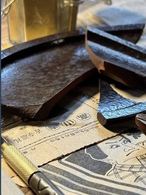
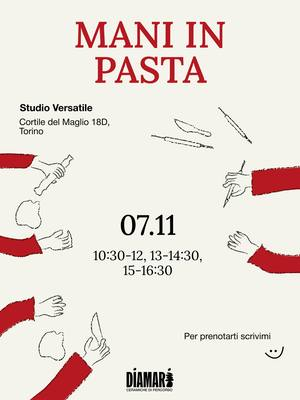
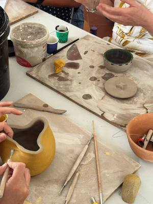
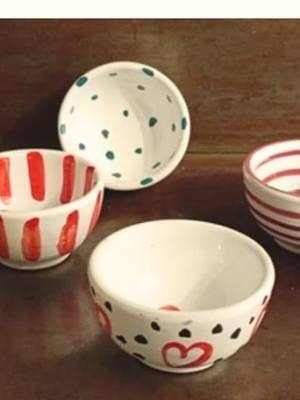
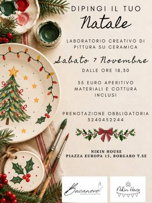
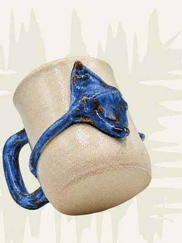
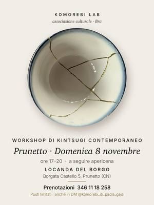
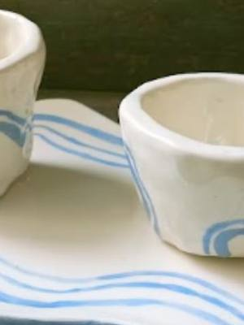

Corsi e workshop di ceramica a Torino e dintorni
Corsi di ceramica, tornio, modellazione, decorazione e kintsugi a Torino, Cuneo e dintorni: date, prezzi e come iscriversi.
Cerca tutti i workshop83 attività in programma · aggiornato il 2 novembre 2026
 mar3novCeramicaDecorazioni di Natale: ceramiche per l’alberomartedì 3 novembre, 18:00–19:30San Salvario (TO) · 40 €con Studio Biscotto
mar3novCeramicaDecorazioni di Natale: ceramiche per l’alberomartedì 3 novembre, 18:00–19:30San Salvario (TO) · 40 €con Studio Biscotto- gio5novCeramicaDecora ceramica: pittura liberagiovedì 5 novembre, 16:00–21:00Torinocon Spazio IAIA
- ven6novCeramicaCrea la tua tazza: workshop con Rudda venerdì 6 novembre a domenica 29 novembre, 10:00–12:00San Salvario (TO) · 48 €con Rud per Pottery Lab
 ven6novCeramicaSpritz and Pottery: aperitivo e ceramicavenerdì 6 novembre, 18:30–21:00Torinocon Spazio IAIA
ven6novCeramicaSpritz and Pottery: aperitivo e ceramicavenerdì 6 novembre, 18:30–21:00Torinocon Spazio IAIA- dal7novCeramicaCorso di ceramica del sabato: 5 incontrida sabato 7 novembre, ogni sabatoAurora (TO)con Aquarius Ceramica

sab7novCeramicaKintsugi contemporaneo: riparare con l’orosabato 7 novembre, 10:00–13:00Torinocon Komorebi Lab
sab7novCeramicaWorkshop di argilla: sperimentare con la materiasabato 7 novembre, 10:30–16:30Aurora (TO) · Gratiscon Diamari Ceramiche
sab7novCeramicaWorkshop di ceramica: set da aperitivosabato 7 novembre, 14:30–18:30Villar Perosa (TO) · 60 € · esauritocon Simona di Terraferma Ceramiche per Riflessi di Casa- sab7novCeramicaKit colazione: tazza in ceramica e ricamosabato 7 novembre, 15:00–17:30San Salvario (TO) · 35 €con Pottery Lab

sab7novCeramicaCiotoline decorate: quattro ciotole dipintesabato 7 novembre, 16:00–18:00Vanchiglia (TO) · 40 €con Il Nicchio di via Monti
sab7novCeramicaDipingi il tuo Natale: ceramica e aperitivosabato 7 novembre, 18:30Borgaro Torinese (TO) · 35 €con Nikin House- dom8novCeramicaPottery Brunch: argilla e brunchdomenica 8 novembre, 09:30–11:30San Salvario (TO) · 55 €con Pottery Lab

dom8novCeramicaTazza Pazza: tazza e piattino in ceramicadomenica 8 novembre, 15:00–18:00Aurora (TO) · 45 €con Diamari Ceramiche dom8novCeramicaWorkshop di gioielli in porcellanadomenica 8 novembre, 15:00–17:00San Salvario (TO) · 48 €con Diletta per Pottery Lab
dom8novCeramicaWorkshop di gioielli in porcellanadomenica 8 novembre, 15:00–17:00San Salvario (TO) · 48 €con Diletta per Pottery Lab
dom8novCeramicaKintsugi e apericena: riparare con l’orodomenica 8 novembre, 17:00–20:00Prunetto (CN)con Komorebi Lab mar10novCeramicaAperitivo creativo: alberello in ceramicamartedì 10 novembre, 17:00Cit Turin (TO) · 50 €con Scialabà
mar10novCeramicaAperitivo creativo: alberello in ceramicamartedì 10 novembre, 17:00Cit Turin (TO) · 50 €con Scialabà- mar10novCeramicaDecorazioni di Natale: ceramiche per l’alberomartedì 10 novembre, 18:00–19:30San Salvario (TO) · 40 €con Studio Biscotto

mar10novCeramicaSet caffè: tazzine e vassoio in argillamartedì 10 novembre, 18:30–20:30Vanchiglia (TO) · 40 €con Il Nicchio di via Monti dal11novCeramicaCorso di ceramica: dal disegno all’argillada mercoledì 11 novembre a mercoledì 16 dicembre, ogni mercoledì, 18:30–20:30Cuneo (CN) · 180 € per 6 lezionicon Mario Ghibaudo per Atelier Crea-Arti
dal11novCeramicaCorso di ceramica: dal disegno all’argillada mercoledì 11 novembre a mercoledì 16 dicembre, ogni mercoledì, 18:30–20:30Cuneo (CN) · 180 € per 6 lezionicon Mario Ghibaudo per Atelier Crea-Arti- gio12novCeramicaDecora ceramica: pittura liberagiovedì 12 novembre, 16:00–21:00Torinocon Spazio IAIA
 ven13novCeramicaSet sushi: piatti e ciotola in argillavenerdì 13 novembre, 18:30–20:30Vanchiglia (TO) · 40 €con Il Nicchio di via Monti
ven13novCeramicaSet sushi: piatti e ciotola in argillavenerdì 13 novembre, 18:30–20:30Vanchiglia (TO) · 40 €con Il Nicchio di via Monti- ven13novCeramicaAperipottery: lastra e colombinovenerdì 13 novembre, 18:30–20:30San Salvario (TO)con Pottery Lab
- ven13novCeramicaSpritz and Pottery: aperitivo e ceramicavenerdì 13 novembre, 18:30–21:00Torinocon Spazio IAIA
 sab14novCeramicaDare Forma: ceramica e psicoterapiasabato 14 novembre, 09:30–11:30San Salvario (TO)con Pottery Lab con Stefania Barbagallo e Marta Pais
sab14novCeramicaDare Forma: ceramica e psicoterapiasabato 14 novembre, 09:30–11:30San Salvario (TO)con Pottery Lab con Stefania Barbagallo e Marta Pais- sab14novCeramicaCrea la tua ghirlanda: gres a lastrasabato 14 novembre, 10:00–12:30Torinocon Laros per Spazio IAIA
 sab14novCeramicaNatale in ceramica: addobbi e regalisabato 14 novembre, 10:30–12:30Pinerolo (TO) · 80 €con Elisa Sasso per NODO Concept Space
sab14novCeramicaNatale in ceramica: addobbi e regalisabato 14 novembre, 10:30–12:30Pinerolo (TO) · 80 €con Elisa Sasso per NODO Concept Space sab14novCeramicaWorkshop di decorazione: due tecnichesabato 14 novembre, 13:00–15:30San Salvario (TO) · 48 €con Marta Pais per Pottery Lab
sab14novCeramicaWorkshop di decorazione: due tecnichesabato 14 novembre, 13:00–15:30San Salvario (TO) · 48 €con Marta Pais per Pottery Lab sab14novCeramicaKintsugi a Cherasco: riparare con l’orosabato 14 novembre, 15:00–18:00Cherasco (CN)con Komorebi Lab con Il Sole a Mezzanotte
sab14novCeramicaKintsugi a Cherasco: riparare con l’orosabato 14 novembre, 15:00–18:00Cherasco (CN)con Komorebi Lab con Il Sole a Mezzanotte sab14novCeramicaUna mug d’autunno: colora la tua tazzasabato 14 novembre, 15:30Torino · 27 €con TO much experience
sab14novCeramicaUna mug d’autunno: colora la tua tazzasabato 14 novembre, 15:30Torino · 27 €con TO much experience dom15novCeramicaCoffee and Pottery: colazione e ceramicadomenica 15 novembre, 10:00–12:00Torino · 25 €con Spazio IAIA
dom15novCeramicaCoffee and Pottery: colazione e ceramicadomenica 15 novembre, 10:00–12:00Torino · 25 €con Spazio IAIA- dom15novCeramicaDecorazioni di Natale: ceramiche per l’alberodomenica 15 novembre, 10:30–12:00San Salvario (TO) · 40 €con Studio Biscotto
- dom15novCeramicaDecora il tuo Natale: ceramiche nataliziedomenica 15 novembre, 13:30–15:30San Salvario (TO) · 25 €con Pottery Lab
 dom15novCeramicaDecorazioni natalizie: formine in argilladomenica 15 novembre, 16:00–18:00Vanchiglia (TO) · da 20 €con Il Nicchio di via Monti
dom15novCeramicaDecorazioni natalizie: formine in argilladomenica 15 novembre, 16:00–18:00Vanchiglia (TO) · da 20 €con Il Nicchio di via Monti dom15novCeramicaOfficina del Natale: decorazioni in ceramicadomenica 15 novembre, 16:00–22:00Torino · 20 € all’oracon Spazio IAIA
dom15novCeramicaOfficina del Natale: decorazioni in ceramicadomenica 15 novembre, 16:00–22:00Torino · 20 € all’oracon Spazio IAIA lun16novCeramicaCrea il tuo piatto: ciotole e svuotataschelunedì 16 novembre, 18:00–20:00San Salvario (TO) · 48 €con Pottery Lab con Roberta
lun16novCeramicaCrea il tuo piatto: ciotole e svuotataschelunedì 16 novembre, 18:00–20:00San Salvario (TO) · 48 €con Pottery Lab con Roberta- dal17novCeramicaCorso di ceramica: tornio o modellatoda martedì 17 novembreAurora (TO) · 100 € per 4 incontricon Aquarius Ceramica
 mer18novCeramicaColora & Gusta: ceramica e pizzamercoledì 18 novembreSan Salvario (TO) · 39 €con Aperi Pods
mer18novCeramicaColora & Gusta: ceramica e pizzamercoledì 18 novembreSan Salvario (TO) · 39 €con Aperi Pods- gio19novCeramicaOracle pottery: carte oracolo e amuletogiovedì 19 novembre, 19:00–21:00Torinocon Paola Zotta per Spazio IAIA
- ven20novCeramicaSpritz and Pottery: aperitivo e ceramicavenerdì 20 novembre, 18:30–21:00Torinocon Spazio IAIA
- sab21novCeramicaColazione e ceramica: mattina in laboratoriosabato 21 novembreManta (CN) · 60 €con Laboratorio di Ceramica a Manta
 sab21novCeramicaArgilla Rituale: ciotola incantatoriasabato 21 novembreVanchiglia (TO) · 45 €con Maccu per Maniera Factory
sab21novCeramicaArgilla Rituale: ciotola incantatoriasabato 21 novembreVanchiglia (TO) · 45 €con Maccu per Maniera Factory sab21novCeramicaArgilla per tutti: il primo pezzosabato 21 novembre, 15:00–17:00Santa Rita (TO)con Rossella Eula per Anima Atelier
sab21novCeramicaArgilla per tutti: il primo pezzosabato 21 novembre, 15:00–17:00Santa Rita (TO)con Rossella Eula per Anima Atelier sab21novCeramicaTillandsia: vasi sospesi in ceramicasabato 21 novembre, 16:00–18:00San Salvario (TO) · 48 €con Pottery Lab
sab21novCeramicaTillandsia: vasi sospesi in ceramicasabato 21 novembre, 16:00–18:00San Salvario (TO) · 48 €con Pottery Lab- dom22novCeramicaPottery Brunch: argilla e brunchdomenica 22 novembre, 09:30–11:30San Salvario (TO) · 55 €con Pottery Lab
 lun23novCeramicaFoglietto: memo magnetico in ceramicalunedì 23 novembre, 18:30–20:30Vanchiglia (TO) · 40 €con Il Nicchio di via Monti
lun23novCeramicaFoglietto: memo magnetico in ceramicalunedì 23 novembre, 18:30–20:30Vanchiglia (TO) · 40 €con Il Nicchio di via Monti- mar24novCeramicaArgilla per tutti: il primo pezzomartedì 24 novembre, 15:00–17:00Santa Rita (TO)con Rossella Eula per Anima Atelier
- mer25novCeramicaWorkshop di Natale: decorazioni in ceramicamercoledì 25 novembre, 17:00Cit Turin (TO) · 55 €con Scialabà
 mer25novCeramicaWorkshop di gioielli kintsugi: merenda orientalemercoledì 25 novembre, 18:30–20:30Centro (TO) · 55 €con Hanami Design
mer25novCeramicaWorkshop di gioielli kintsugi: merenda orientalemercoledì 25 novembre, 18:30–20:30Centro (TO) · 55 €con Hanami Design mer25novCeramicaPortafoto: tre cornici in ceramicamercoledì 25 novembre, 18:30–20:30Vanchiglia (TO) · 40 €con Il Nicchio di via Monti
mer25novCeramicaPortafoto: tre cornici in ceramicamercoledì 25 novembre, 18:30–20:30Vanchiglia (TO) · 40 €con Il Nicchio di via Monti- gio26novCeramicaDecora ceramica: pittura liberagiovedì 26 novembre, 16:00–21:00Torinocon Spazio IAIA
- ven27novCeramicaAperitivo e ceramica: serata in laboratoriovenerdì 27 novembreManta (CN) · 60 €con Laboratorio di Ceramica a Manta
- ven27novCeramicaAperipottery: lastra e colombinovenerdì 27 novembre, 18:30–20:30San Salvario (TO)con Pottery Lab
- ven27novCeramicaSpritz and Pottery: aperitivo e ceramicavenerdì 27 novembre, 18:30–21:00Torinocon Spazio IAIA
- sab28novCeramicaColazione e ceramica: mattina in laboratoriosabato 28 novembreManta (CN) · 60 €con Laboratorio di Ceramica a Manta
- sab28novCeramicaArgilla Rituale: bolisabato 28 novembreVanchiglia (TO) · 45 €con Maccu per Maniera Factory
- sab28novCeramicaScolpire le nuvole: scultura in argillasabato 28 novembre, 10:00–12:30San Salvario (TO) · 50 €con Ermanno Cirulli per Pottery Lab
 sab28novCeramicaEsperienza Kintsugi: riparare con l’orosabato 28 novembre, 14:30–18:30San Salvario (TO) · 120 €con Pottery Lab con Diletta
sab28novCeramicaEsperienza Kintsugi: riparare con l’orosabato 28 novembre, 14:30–18:30San Salvario (TO) · 120 €con Pottery Lab con Diletta sab28novCeramicaWorkshop di ceramica: addobbi di Natalesabato 28 novembre, 14:30–18:30Villar Perosa (TO) · 60 €con Simona di Terraferma Ceramiche per Riflessi di Casa
sab28novCeramicaWorkshop di ceramica: addobbi di Natalesabato 28 novembre, 14:30–18:30Villar Perosa (TO) · 60 €con Simona di Terraferma Ceramiche per Riflessi di Casa sab28novCeramicaAperilla: set da aperitivo in argillasabato 28 novembre, 17:00–19:00Vanchiglia (TO) · 40 €con Il Nicchio di via Monti
sab28novCeramicaAperilla: set da aperitivo in argillasabato 28 novembre, 17:00–19:00Vanchiglia (TO) · 40 €con Il Nicchio di via Monti dom29novCeramicaWorkshop di gioielli: kintsugi su ceramicadomenica 29 novembre, 11:00–13:00Santa Rita (TO)con Hanami Design per Anima Atelier
dom29novCeramicaWorkshop di gioielli: kintsugi su ceramicadomenica 29 novembre, 11:00–13:00Santa Rita (TO)con Hanami Design per Anima Atelier dom29novCeramicaFree Clay: una ciotola in un’oradomenica 29 novembre, 14:30–18:30Vanchiglia (TO) · 25 €con Il Nicchio di via Monti
dom29novCeramicaFree Clay: una ciotola in un’oradomenica 29 novembre, 14:30–18:30Vanchiglia (TO) · 25 €con Il Nicchio di via Monti- dom29novCeramicaOfficina del Natale: decorazioni in ceramicadomenica 29 novembre, 16:00–22:00Torino · 20 € all’oracon Spazio IAIA
 dom29novCeramicaWorkshop di gioielli kintsugi: un gioiello doratodomenica 29 novembre, 16:30–18:30Pianezza (TO) · 55 €con Hanami Design
dom29novCeramicaWorkshop di gioielli kintsugi: un gioiello doratodomenica 29 novembre, 16:30–18:30Pianezza (TO) · 55 €con Hanami Design- ven4dicCeramicaAperitivo e ceramica: serata di Natalevenerdì 4 dicembreManta (CN) · 60 €con Laboratorio di Ceramica a Manta
- datada confermareAltroCascina Roccafranca: corsi della stagioneData da confermareMirafiori (TO)con Cascina Roccafranca
- dataa sceltaCeramicaLezioni di ceramica: al tuo ritmoData a sceltaManta (CN) · 125 € per 4 lezionicon Laboratorio di Ceramica a Manta
 dataa sceltaCeramicaCorsi di modellazione privati: ceramicaData a sceltaVanchiglia (TO)con Maccu per Maniera Factory
dataa sceltaCeramicaCorsi di modellazione privati: ceramicaData a sceltaVanchiglia (TO)con Maccu per Maniera Factory- dataa sceltaCeramicaLezioni di tornio: individualiData a sceltaVanchiglia (TO) · 45 € a lezionecon Ceramiche Musso per Maniera Factory
 dataa sceltaCeramicaPittura libera su ceramica: scegli e decoraData a sceltaVanchiglia (TO) · da 15 €con Naïf
dataa sceltaCeramicaPittura libera su ceramica: scegli e decoraData a sceltaVanchiglia (TO) · da 15 €con Naïf dataa sceltaCeramicaCorso di ceramica: modellazione e smaltiData a sceltaVanchiglia (TO) · 120 € per 4 lezionicon Il Nicchio di via Monti
dataa sceltaCeramicaCorso di ceramica: modellazione e smaltiData a sceltaVanchiglia (TO) · 120 € per 4 lezionicon Il Nicchio di via Monti- dataa sceltaCeramicaCorso di tornio: lezioni per dueData a sceltaVanchiglia (TO) · 45 € a lezionecon Il Nicchio di via Monti
 dataa sceltaCeramicaCorsi di ceramica: tornio e modellatoData a sceltaSan Salvario (TO)con Openlab573
dataa sceltaCeramicaCorsi di ceramica: tornio e modellatoData a sceltaSan Salvario (TO)con Openlab573 datada confermareCeramicaWorkshop di ceramica: modellazione ed engobbiData da confermareQuadrilatero (TO) · 50 € · esauritocon Ouimiel Studio
datada confermareCeramicaWorkshop di ceramica: modellazione ed engobbiData da confermareQuadrilatero (TO) · 50 € · esauritocon Ouimiel Studio dataa sceltaCeramicaL’albero della vita: scultura in terracottaData a sceltaSan Salvario (TO) · 95 €con Pottery Lab con Marta Pais
dataa sceltaCeramicaL’albero della vita: scultura in terracottaData a sceltaSan Salvario (TO) · 95 €con Pottery Lab con Marta Pais dataa sceltaCeramicaLaboratorio libero: ceramica in autonomiaData a sceltaSan Salvario (TO) · 50 € per 10 orecon Pottery Lab
dataa sceltaCeramicaLaboratorio libero: ceramica in autonomiaData a sceltaSan Salvario (TO) · 50 € per 10 orecon Pottery Lab dataa sceltaCeramicaCorso di modellazione: lastra e colombinoOgni settimana, in più turniSan Salvario (TO) · 150 € per 4 lezionicon Pottery Lab
dataa sceltaCeramicaCorso di modellazione: lastra e colombinoOgni settimana, in più turniSan Salvario (TO) · 150 € per 4 lezionicon Pottery Lab- dataa sceltaCeramicaCorso di tornio: quattro incontriOgni martedì, mercoledì, giovedì o sabatoSan Salvario (TO) · 150 € per 4 lezionicon Pottery Lab con Roberta Dalpasso
 dataa sceltaCeramicaCorso di decorazione: ceramica dipintaData a sceltaCit Turin (TO)con Scialabà
dataa sceltaCeramicaCorso di decorazione: ceramica dipintaData a sceltaCit Turin (TO)con Scialabà dataa sceltaCeramicaCorso di gioielli: porcellana e argillaData a sceltaCit Turin (TO) · 125 €con Scialabà
dataa sceltaCeramicaCorso di gioielli: porcellana e argillaData a sceltaCit Turin (TO) · 125 €con Scialabà- dataa sceltaCeramicaCorso di ceramica: lastra e tornioData a sceltaCit Turin (TO) · 120 €con Scialabà
- dataa sceltaCeramicaCorso di tornio: centratura e formeData a sceltaCit Turin (TO) · 120 €con Scialabà
- ognigioCeramicaIl tè delle cinque: decora una tazzaOgni giovedì, 17:00–18:30San Salvario (TO) · 25 €con Pottery Lab con Diletta
 dataa sceltaCeramicaCorso di tornio: ceramica per tutti i livelliOgni lunedì e mercoledì, 18:30–20:30San Donato (TO)con Chu Lab
dataa sceltaCeramicaCorso di tornio: ceramica per tutti i livelliOgni lunedì e mercoledì, 18:30–20:30San Donato (TO)con Chu Lab